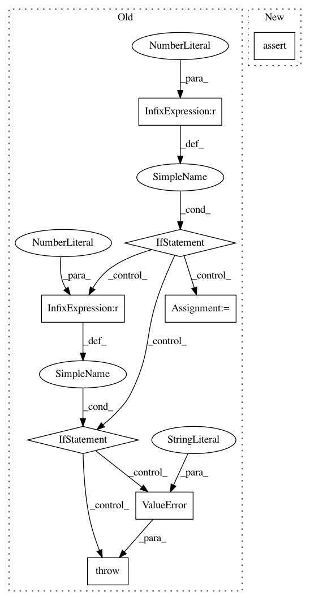

af461df627ef660d1a71b6981dedb4e4b504ba9a,txtgen/modules/connectors/connectors.py,StochasticConnector,_build,#StochasticConnector#Any#,256
Before Change
raise ValueError(
"Gaussian connector requires tuple input tensors.")
if len(inputs) == 2:
input_mu, input_log_var = inputs
output = sampler(input_mu, input_log_var)
elif len(inputs) == 3:
input_mu, input_log_var, context = inputs
sample = sampler(input_mu, input_log_var)
output = tf.concat([sample, context], axis=1)
else:
raise ValueError("Gaussian connector supports either "
"(mu, logvar) or (mu, logvar, context)")
else:
raise ValueError("Unsupported distribution")
self._add_internal_trainable_variables()
After Change
output = inputs.sample()
try:
nest.assert_same_structure(inputs, self._decoder_state_size)
except (ValueError, TypeError):
flat_input = nest.flatten(inputs)
output = nest.pack_sequence_as(
self._decoder_state_size, flat_input)
In pattern: SUPERPATTERN
Frequency: 3
Non-data size: 8
Instances
Project Name: asyml/texar
Commit Name: af461df627ef660d1a71b6981dedb4e4b504ba9a
Time: 2017-09-25
Author: junxianh2@gmail.com
File Name: txtgen/modules/connectors/connectors.py
Class Name: StochasticConnector
Method Name: _build
Project Name: AIRLab-POLIMI/mushroom
Commit Name: 1a2462f18707e04f294224053473668820111cf5
Time: 2017-07-23
Author: carlo.deramo@gmail.com
File Name: PyPi/approximators/regressor.py
Class Name: Regressor
Method Name: fit
Project Name: AIRLab-POLIMI/mushroom
Commit Name: 1a2462f18707e04f294224053473668820111cf5
Time: 2017-07-23
Author: carlo.deramo@gmail.com
File Name: PyPi/approximators/regressor.py
Class Name: Regressor
Method Name: predict